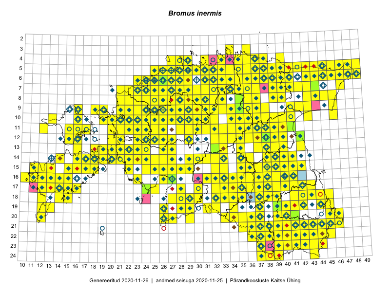

Bromus inermis
Uuendatud: 2016-12-02
Kaardile koondatud taksonid: Bromus inermis Leyss.

Kaart põhineb 521 kirjel, neist vaatlusi 519 ja eksemplare 2. Taksonit on leitud 342 ruudust.
Kuvatud viited 20 esimesele andmebaasikirjele, ülejäänud PlutoFis
- Thea Kull: 2015-07-07: 16-40: ala
- Toomas Kukk, Thea Kull, Timo Luhamäe, Ott Luuk, Peedu Saar: 2015-06-28: 13-26: ala
- Toomas Kukk, Peedu Saar: 2014-09-12: 07-42: ala
- Tiit Hallikma, Toomas Kukk: 2015-07-21: 05-44: ala
- Tiit Hallikma, Toomas Kukk: 2015-07-21: 05-45: ala
- Rein Kalamees, Kersti Püssa: 2015-09-02: 03-36: ala
- Ott Luuk, Toivo Sepp: 2015-07-29: 09-32: ala
- Ott Luuk, Toivo Sepp: 2015-07-29: 09-31: ala
- Peedu Saar, Ott Luuk: 2015-06-21: 14-41: ala
- Ott Luuk, Peedu Saar: 2015-07-27: 11-35: ala
- Peedu Saar: 2015-07-04: 18-45: ala
- Peedu Saar: 2015-07-04: 18-44: ala
- Peedu Saar: 2015-07-14: 15-38: ala
- Peedu Saar: 2015-07-15: 15-39: ala
- Tiit Hallikma, Toomas Kukk: 2015-07-22: 05-49: ala
- Peedu Saar, Eerik Leibak: 2015-07-30: 15-42: ala
- Peedu Saar, Eerik Leibak: 2015-07-30: 16-41: ala
- Toomas Kukk, Kersti Tambets, Sten Mander, Janika Sammasto, Timo Luhamäe: 2014-07-29: 18-45: ala
- Peedu Saar, Liina Oja: 2015-06-08: 10-34: ala
- Peedu Saar, Liina Oja: 2015-06-09: 17-28: ala